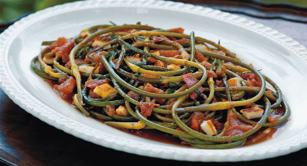
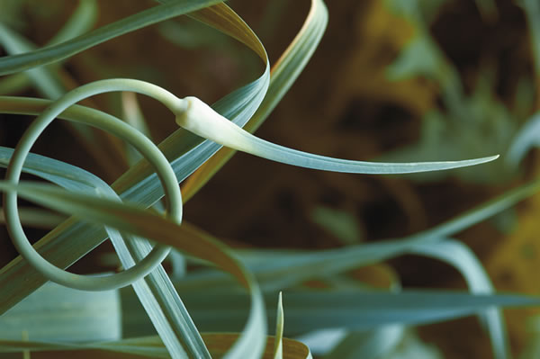
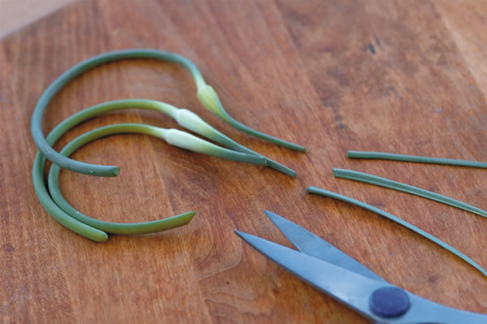

If you grow your own garlic or have a good farmer’s market, then you can enjoy a new kind of vegetable - garlic scapes. The scapes are the flower stems that garlic plants produce before the bulbs mature. Growers often remove the scapes to push the plant’s energy toward bigger bulbs, and when harvested while they are young and tender, the scapes are delicious.
My first culinary encounter with garlic scapes occurred in a tiny Istrian village on the coast of Slovenia. The people in that part of the country speak Italian and have preserved food ways dating from ancient times. The dish they served me was made by sautéing the chopped scapes in olive oil, then pouring a beaten egg mixture over them, similar to a frittata. The cakelike omelet was then served with a liberal garnish of chopped fresh herbs and a glass of local wine, of course. How could anything so simple be so incredibly delicious?
In most parts of the world, people make use of many things we tend to throw away. In the case of garlic, the unopened flower heads are considered a delicacy - even the leaves are used for making soup stocks. Indeed, no part of the plant is wasted. American produce growers, especially those who cultivate garlic, have begun to look at these traditional foods as a way not only to increase the profitability of their garlic crop, but also to introduce consumers to tasty new approaches to garlic cookery.
The secret to scape cookery is to pick them early - the earlier the better. I do this when they are just beginning to emerge between the leaves; at that point, they are so tender you can eat them raw. The best time of day to harvest scapes is during the afternoon when the sun is hot. That way, the wound you create by cutting off the scapes will dry quicker and heal better. If you harvest early in the morning, the garlic plant may weep its sap for several hours, which is not good for the plant.
There is a lot of discussion among garlic growers about the exact best time to pick scapes - what “early” means. Part of this discussion is due to the fact that there are different varieties of garlic, and some produce large scapes while others produce very small ones. In spite of seed catalog claims, the U.S. Department of Agriculture has identified only 10 major garlic cultivars based on genetic analysis of the 400 garlics in its collection. This huge duplication narrows the field of discussion considerably, and of those 10, probably the best varieties for scapes are ‘Chesnok’ and ‘Purple Italian Easy Peel.’ Of course, everyone has personal preferences because different garlics grow better in some parts of the country than in others. As a rule, stick with the varieties that do best in your particular area.
No matter what variety you grow, harvest the scapes before they start to curl. If the stems of the scape are starting their curls, you still can cook them if you trim off the base of the stems much the same way you would trim off the tough ends of asparagus. But, you also should trim off the tips of the garlic flower heads, especially if you intend to sauté or stir-fry them. (The long tips of the flower heads scorch easily.)
Garlic cooks at 120 degrees, so it is not necessary to use very high heat except in the initial stages of sautéing; it’s important to remember that the scapes are far more delicate than the bulbs. But cooking them is a delicious way to use something that otherwise would go wasted, and visually, you can create some attractive dishes that are especially nice as starter courses or hors d’oeuvres
After my stint in Slovenia, I began collecting recipes for scapes and discovered that in the United States at least, the most common recipes to turn up on the Internet were for pickling. Pickled garlic scapes are fine, but I think a sauté that I found in Cyprus showcases the scapes, taking advantage of both their subtle flavor, as well as their interesting. shape (see recipe below). Best of all, it is a dish that improves by standing overnight so that the flavors can meld and mellow.
I prefer to use duck fat to create the sauce because it is one of the most wonderful cooking mediums for amplifying flavors, but you may want to use olive oil instead. Olive oil does not create quite as thick a sauce but it gives you a vegan option.
Heirloom Vegetable Gardening: A Master Gardener’s Guide to Planting, Seed Saving and Cultural History by William Woys Weaver, now on CD. If you want to explore the fabulous flavors, fascinating history and amazing diversity of vegetables, this is the book to start with. Food historian and Mother Earth contributing editor Will Weaver profiles 280 heirloom varieties, with authoritative growing advice and incredible recipes. First published in 1997, Heirloom Vegetable Gardening has since been out of print, with used copies selling online for as much as $300. We are proud to present the original text, with color photos, as a digital book on CD-ROM. Order now.
|
 Garlic scapes in the garden |
 trimmed for sauteing |
 |